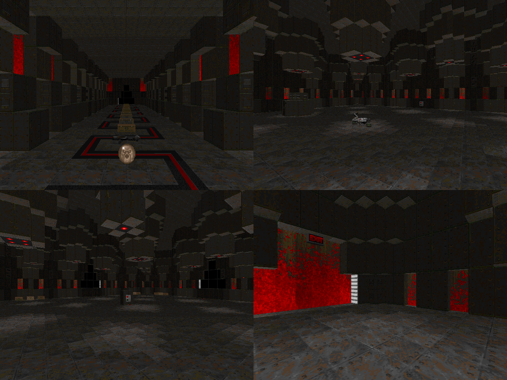

DOWNLOAD LINKS


| Year | 2024 |
| IWAD | Doom II |
| Source port | Limit-removing |
| Game mode(s) | Single-player |
| Map(s) contributed | MAP16 |
Super Doom TV is a 26-map limit-removing megawad that came to life as a community project
hosted by Lorcav. Inspired by the SNES game Super Smash TV, mappers were given prompts like
"Watch your step" and "Collect powerups" to base their maps on.
MAP16 by Yours Truly, titled "No Dice", coincidentally takes its name from the exact prompt that was
given to its respective slot. My initial idea with the map was to have a single combat arena with waves
of enemies flooding it in a random order, but when all of my attempts to get the setup working the way I
wanted it to failed, the map ended up becoming a more standard series of combat puzzles. There's a hint of
Devious Deviance in the map in that the enemy count and composition stays the same across difficulty
settings - what changes instead is the items that the player gets, with lower difficulties granting more
ammo and healing items.